Interpreting Parton Distributions with Shapley Values
Raphaël Bonnet-Guerrini1,3, Stefano Carrazza2,3, Stefano Forte2,3,Eva Groenendijk2,3, and Ramon Winterhalder2,3
1Computer Science department, University of Milan; 2TIF lab, Physics Department, University of Milan;
3Istituto Nazionale di Fisica Nucleare, Sezione di Milano
Parton Distribution Functions (PDFs) and NNPDF
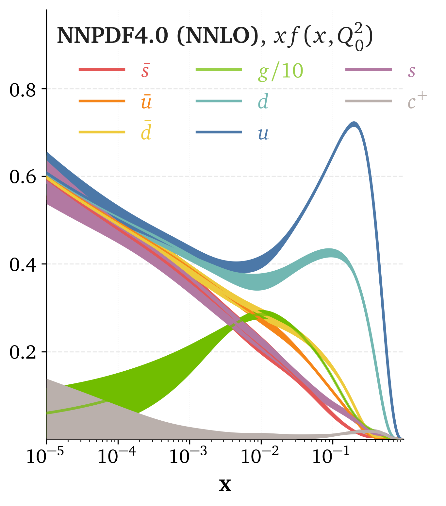
- Parton carrying a fraction of momentum \(x\) at scale \(Q^2\)
- NNPDF: neural net, no functional form assumed
PDF fitting: an inverse problem
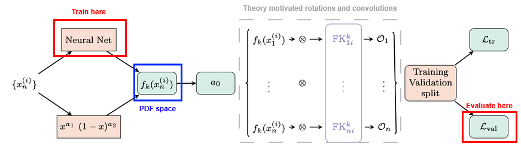
Theory (QCD, QED) allows us to compute the observable values \(\mathcal{O}_n\) from the PDF space.
PDF space
Why does a given flavor look like this in a given \(x\) region? Which datasets are responsible for this behavior?
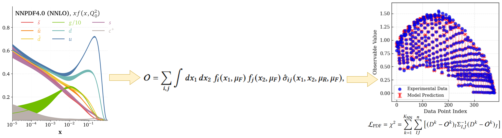
NNPDF a black box model ?
Black-box systems are a recurrent interpretability issue in modern DL. We can take inspiration from the methods developed there to solve the interpretability problem of PDFs.
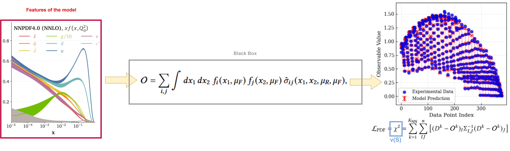
XAI answer : What's the impact of one feature on the output of the model ?
Shapley Values
Game theory: average marginal contribution of player \(i\) across all coalitions \(S\).
\[ \phi_i = \sum_{S \subseteq N \setminus \{i\}} \frac{|S|! \, (|N| - |S| - 1)!}{|N|!} \left[ v(S \cup \{i\}) - v(S) \right] \]Cost \(\sim 2^N\): intractable for high dimensional attribution.
SHAP buys tractability by assuming feature independence, known to distort HEP results when features are correlated.
PDF flavors as players
Take a determined PDF set as given, each flavor is a player. Blind to how it was fitted.
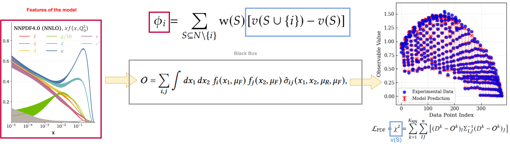
- \(\phi_i\): Shapley value of flavor \(i\)
- \(S\): subset of flavors, \(i\notin S\)
- \(v(S)=\chi^2\) with the flavors in \(S\) perturbed, the rest untouched
The Shapley analysis in NNPDF
Load trained PDFs from n3fit.
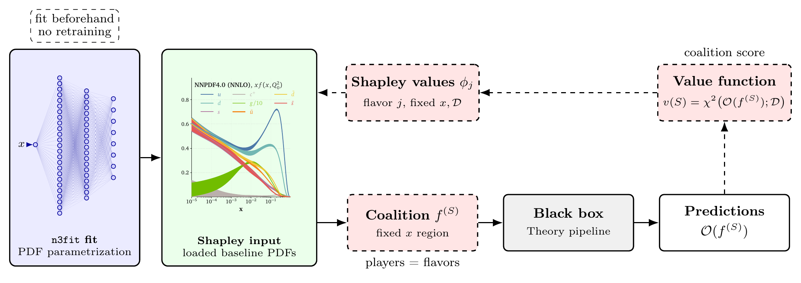
- Build all coalitions of perturbed PDFs
- Compute \(\chi^2\) for each
- Per flavor: compare \(\chi^2\) perturbed vs not
How to perturb the PDF space ?

How to perturb the PDF space ?
\(\Delta^\pm_j(x_\mu)\) = 68% CI bounds of the replicas → calibrated to the PDF uncertainty, comparable across flavors.
Coalitions: what does \(\phi_g\) measure?
Flavors join the perturbation one at a time, in a random order.
For each possible \(S\), we ask what \(g\) adds to the \(\chi^2\) at the moment it walks in.
blue perturbed flavor · grey non-perturbed flavor · g perturbed flavor \(g\)
\(8! = 40320\) orders, but only 128 distinct \(S\).
Correlated perturbation
Correlations between flavors come from the sum rules:
Flavors in \(S\) get the bump; the others have their normalization \(A_i\) readjusted so the rules still hold.
How to interpret the Shapley values?
Depends on the \(x\) region (local perturbation) and on the dataset (\(\chi^2\)).
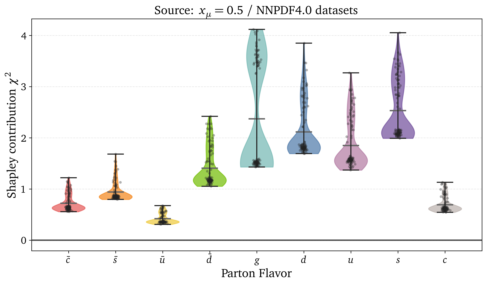
Completeness: \[\sum_{j \in N} \phi_j = v(N)-v(\emptyset)\] \(v=\chi^2\), so \(\phi_j\) is in units of \(\chi^2\).Uncertainty on the Shapley value
Replay the whole game on each replica \(f^k\):
\[ \phi_i^{(k)}=\phi_i(f^k), \qquad \bar\phi_i = \frac{1}{N_{\text{rep}}}\sum_k \phi_i^{(k)}, \qquad \sigma^2_{\phi_i}=\frac{1}{N_{\text{rep}}-1}\sum_k\left(\phi_i^{(k)}-\bar\phi_i\right)^2. \]- 100 replicas × 128 coalitions
- Plots: median + 68% band \([\phi^{16},\phi^{84}]\)
- Quick scans: central PDF only, no uncertainty
Scanning the whole \(x\) range
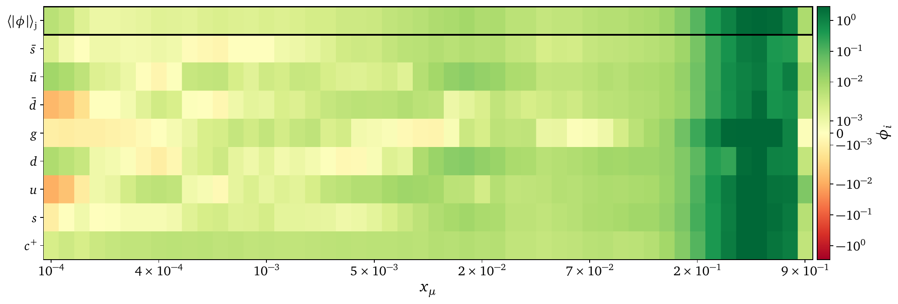
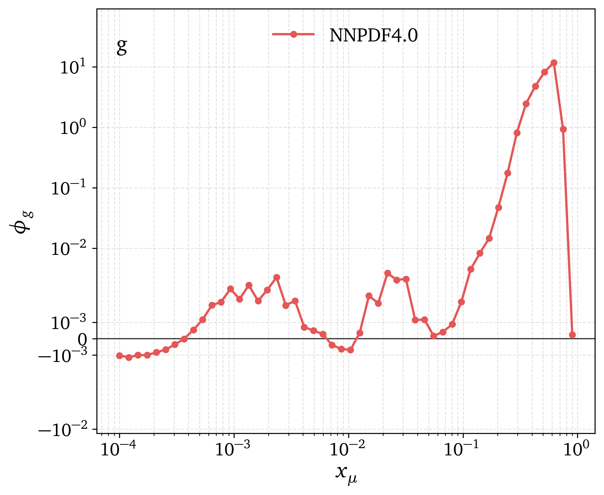
50 log-spaced \(x_\mu\), central NNPDF4.0, flavor basis.
One row misbehaves: the gluon dips to zero twice.
A blind spot in the gluon
We infer the gluon from how data change with \(Q^2\)
(scaling violations)
At \(N=2\), momentum conservation creates a non-evolving mode
No evolution = little signal to constrain the gluon
Mellin mapping: \(N_0=2 \;\mapsto\; x\approx0.07\)
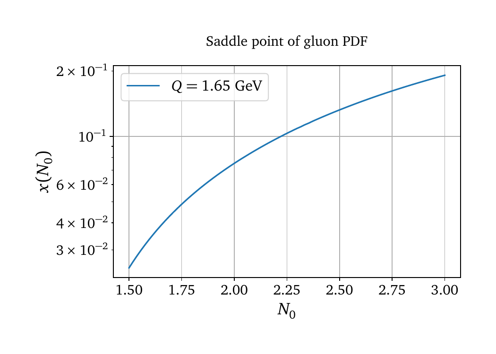
The non-evolving mode lands at the dip
Why this matters
- Expect an inflated uncertainty there. It does not happen
- The band interpolates straight across: new physics in the gluon here could be absorbed with no visible distortion
- Invisible to standard diagnostics: the Shapley value makes it explicit
Is it universal? NNPDF4.0 vs MSHT20 vs CT18
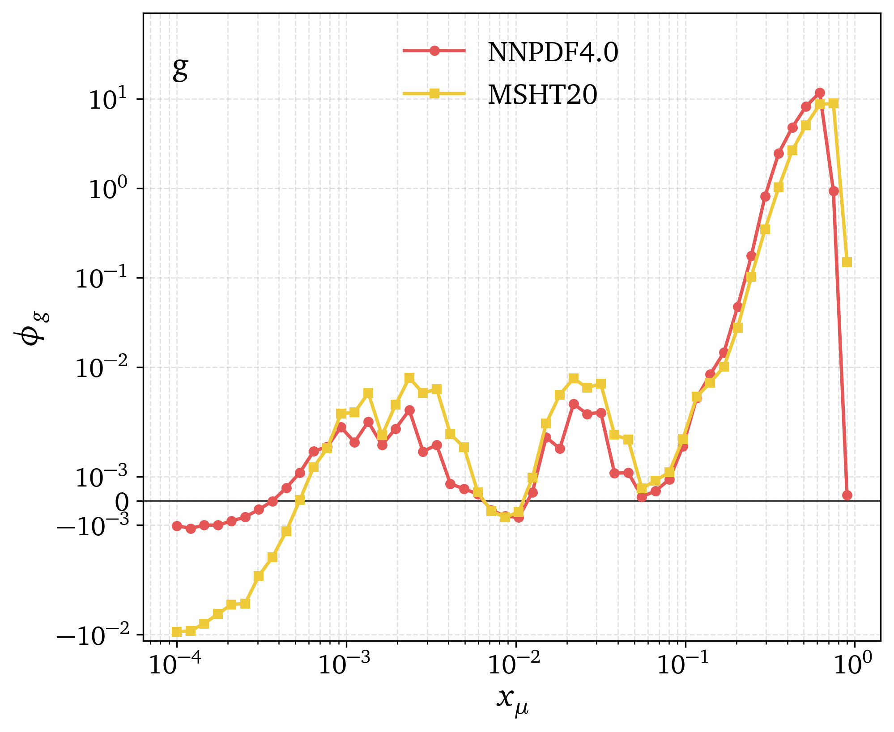
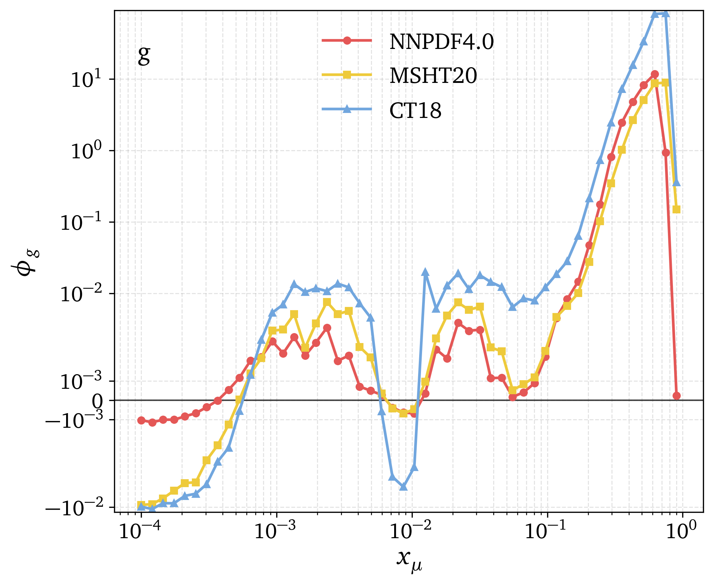
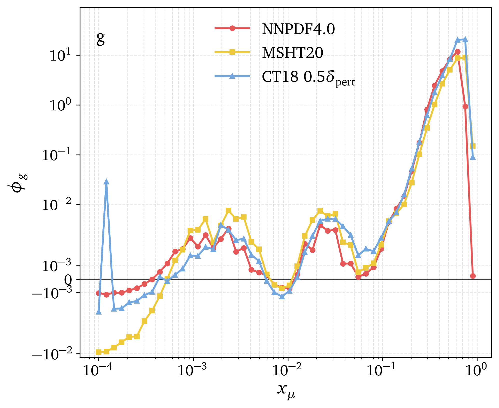
- The argument is pure QCD evolution \(\Rightarrow\) the dip must be universal
- MSHT20: same dip
- CT18: same dip, but sitting higher
- Rescale CT18 to \(0.5\,\delta_{\text{pert}}\) and it lands on the others: CT18 uncertainties are more conservative
- Holds for fixed functional forms too, not just the NN
Application: optimizing the hyperopt folds
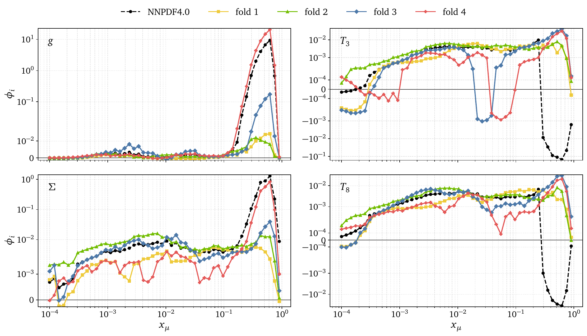
- 4 folds, each meant to represent the whole dataset, built by intuition
- Profiles are similar across folds \(\Rightarrow\) the design was adequate
- At large \(x\), \(T_3,T_8\) go negative for the full set, for no fold → tension with post-hyperopt data
- Next: choose folds minimizing the distance between profiles
Outlook
- Quantitative methodology-agnostic metric of which flavor is constrained where
- Recovers the standard lore, and exposes what it misses
Future steps
- Data not in the fit → impact of a new measurement before including it
- PDF K-folding, combined sets
- Larger feature space (\(\sim10^9\) coalitions) → controlled approximation
- Not specific to PDFs: any black box with a likelihood x
Thank you !

Backup Slides
Replica scan, six values of \(x_\mu\)
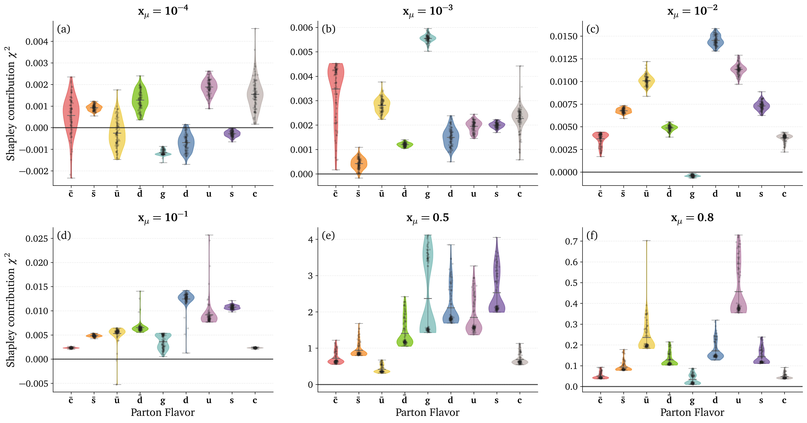
DIS: HERA vs fixed target
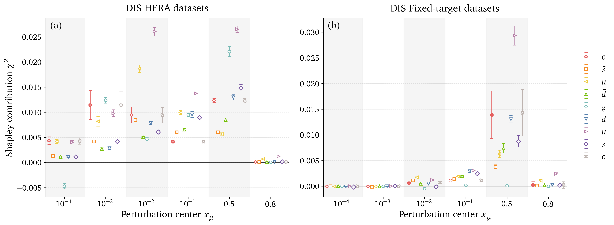
Jets and top pair production
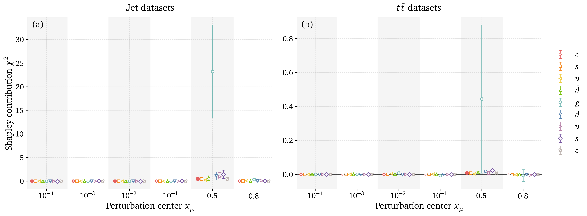
Dataset regularization
- Perturbation can drive a cross section to \(\sim0\) → ratio observables blow up
- Iteratively drop any \(\mathcal{D}_i\) with \(v_{\mathcal{D}_i}(S)>10^5\)
- In practice only
DYE906/DYE866, for a few \(x_\mu\)
Shapley Values Pseudocode
# INPUT: observables, mu,sigma,amplitude, n_samples, n_flavors = n
# OUTPUT: shapley_vals[], baseline_chi2, cache
baseline_chi2 = evaluate_chi2(observables, flavor_subset=[]) # v({})
cache = {} # map subset -> v(S)
all_subsets = power_set(0..n-1) # exclude full-set if desired
for i in 0..n-1:
SV = 0
for S in all_subsets:
if i in S: continue
# v(S)
if S not in cache:
cache[S] = evaluate_chi2(observables, flavor_subset=list(S), mu,sigma,amplitude, n_samples)
vS = cache[S]
# v(S ∪ {i})
S_with = S ∪ {i}
if S_with not in cache:
cache[S_with] = evaluate_chi2(observables, flavor_subset=list(S_with), mu,sigma,amplitude, n_samples)
vSw = cache[S_with]
Δ = vSw - vS # marginal contribution
s = |S|
w = factorial(s) * factorial(n - s - 1) / factorial(n)
SV += w * Δ
shapley_vals[i] = SV
# RETURN: shapley_vals, baseline_chi2, evaluated_coalitions=|cache|
# COMPLEXITY: time ~ O(n · 2^n · cost_eval), space ~ O(2^n) (memoized)
Shapley Values weight
In game theory, Shapley Values represent the contribution \(\phi_i\) of a player \(i\) within a coalition \(S\) by comparing the outcomes of scenarios where the player is present \(v(S \cup \{i\})\) versus absent \(v(S)\). \[ \phi_i = \sum_{S \subseteq N \setminus \{i\}} \text{w}(S) \left[ v(S \cup \{i\}) - v(S) \right] \label{eq:comb_SV} \] With: \[ w(S) = \frac{|S|! \, (|N| - |S| - 1)!}{|N|!} \] \(w(S)\) weights for the importance of the coalition \(S\) being tested. It is the probability that the set of players who come after \(i\) is exactly \(S\).- \(|S|!\) is the number of ways to order the predecessors of \(i\)
- \((|N| - |S| - 1)!\) is the number of ways to order the players before \(i\)
- \(|N|!\) is the number of ways to order all players